ホーム・集中画面 v002
背景・装飾枠・アイコンを個別素材化。人物は既存イラスト、文字と数値はアプリ側で表示。
ホーム実装画面 / 集中中の実装画面 / 生成プロンプト
home_background
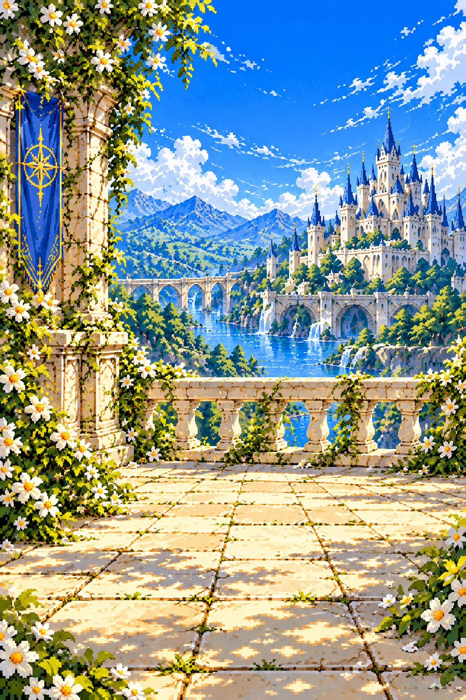
1024×1536
timer_background
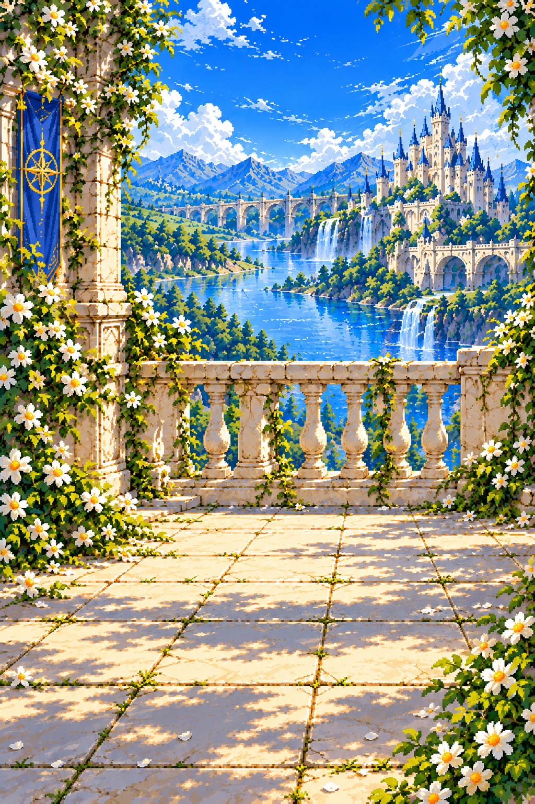
1024×1536
home_stage
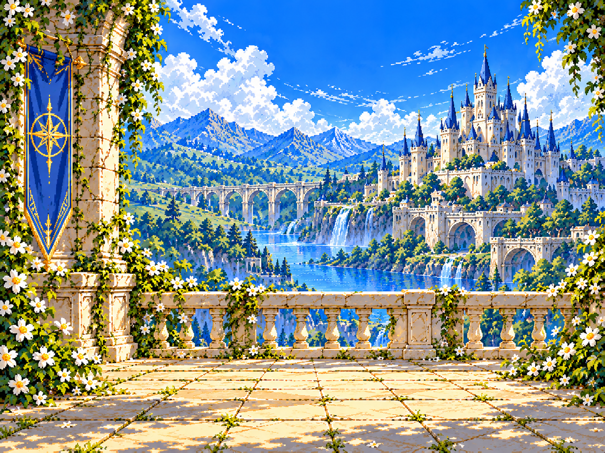
1448×1086
status_frame

1200×240
ornament_top

84×54
ornament_bottom
84×54
metrics_frame

1200×240
chapter_frame
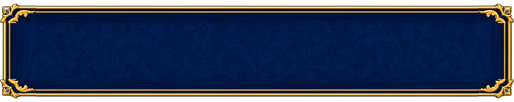
1200×240
action_frame

1200×240
utility_frame

1200×240
adventure_frame
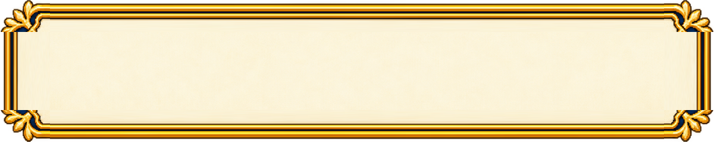
1200×240
timer_frame
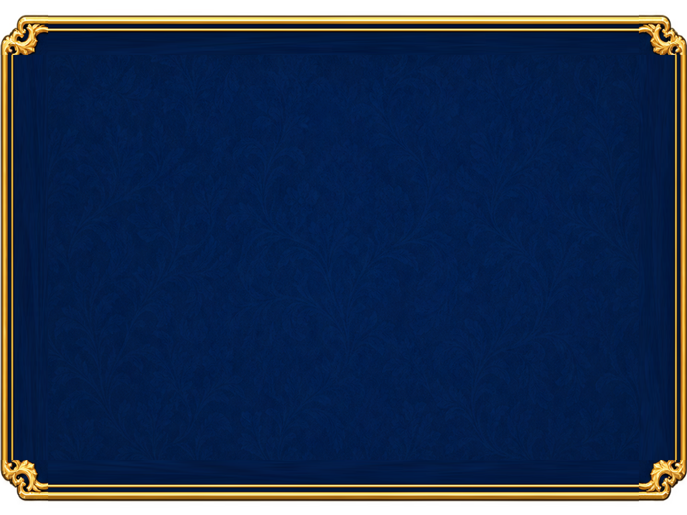
1200×900
record_frame
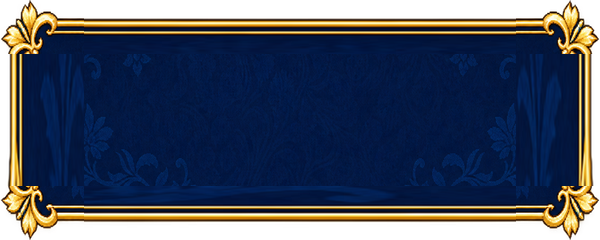
600×240
portrait_frame
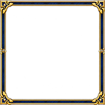
180×180
timer_compass
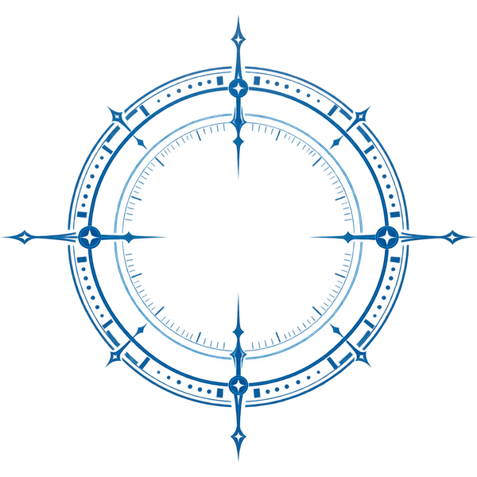
600×600
icon_compass
144×144
icon_hourglass
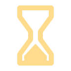
144×144
icon_chart
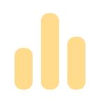
144×144
icon_map
144×144
icon_sound
144×144
icon_pause
144×144
icon_swords
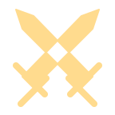
144×144
icon_chevron
144×144
icon_back
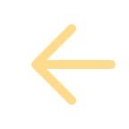
144×144
icon_party
144×144
gauge_track
600×40
gauge_fill
600×40
divider
600×24